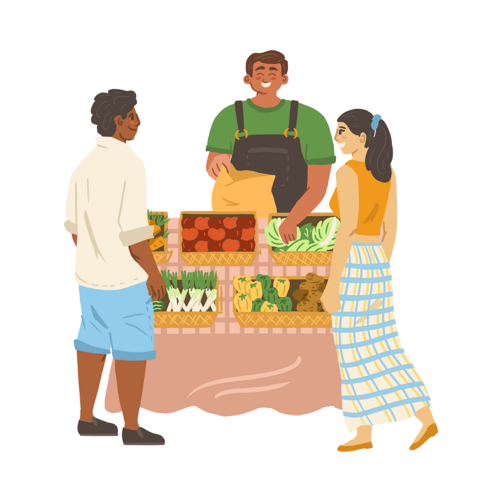

Feira dos Pequenos Produtores
São vendidos alimentos naturais e que foram produzidos de forma mais sustentavél, e com menor uso de agrotóxicos;

Do Campo a Cidade, Colhendo Oportunidades

Práticas Sustentavéis no Campo e na Cidade

Plantar hoje, para colher amanhã
Podemos trazer a sustentabilidade do campo para as cidades, por meio de alguns exemplos, como:
São vendidos alimentos naturais e que foram produzidos de forma mais sustentavél, e com menor uso de agrotóxicos;

Famílias de pequenos produtores vendem alimentos para as pessoas da cidade, e também para as escolas prepararem o lanche;
Transformar resíduos orgânicos, como cascas de alimentos, em adubo para utilizar em hortas.
Cultivar alimentos em pequenos espaços urbanos, como telhados, pátios e lotes vagos; Podem até ser reutilizadas garrafas pet para cultivar.

São espaços compartilhados para cultivo de vegetais e ervas promovem a coesão social e oferecem aos moradores acesso a alimentos frescos e locais.
Utilizar fontes de energia renováveis como paineis solares para gerar energia limpa